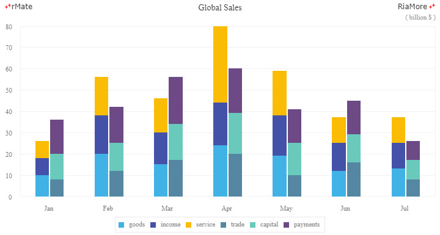

컬럼 차트
컬럼 차트는 데이터의 크기를 세로 막대의 길이로 표현하는 차트입니다.
일반적으로 숫자 축은 차트의 왼쪽에 세로 축(Y 축)으로 표시되고 카테고리 축은 차트의 하단에 가로 축(X 축)으로 표시됩니다.
컬럼 차트는 <Column2DChart> 노드의 series 속성값에 <Column2DSeries> 노드를 설정하여 생성할 수 있습니다.
컬럼 차트의 데이터 시리즈가 여러 개일 경우 (<Column2DSeries> 노드가 여러 개 설정 됨) 데이터 시리즈들이 표현되는 방식은 <Column2DChart> 노드의 type 속성의 설정에 따릅니다.
- clustered: 데이터 시리즈들이 카테고리 별로 클러스터링되어 표현됩니다. (기본값)
- overlaid: 데이터 시리즈들이 카테고리 별로 이전에 표현된 데이터 시리즈 위에 덮어씌워진 형태로 표현됩니다. 따라서 제일 마지막에 표현되는 데이터 시리즈가 제일 전면에 표현됩니다.
- stacked: 데이터 시리즈들이 카테고리 별로 이전에 표현된 데이터 시리즈 위에 스택 형태로 표현됩니다. 따라서 제일 마지막에 표현되는 데이터 시리즈가 최상위 스택에 표현됩니다.
- 100%: 데이터 시리즈들이 카테고리 별로 100% 스택 형태로 표현됩니다. 전체 데이터 시리즈의 합에 대해서 표현되는 데이터 시리즈가 차지하는 상대적 비율만큼 컬럼에서 차지하는 크기가 할당됩니다.
다음은 컬럼 차트를 생성하는 코드와 이를 적용해서 출력한 차트의 예제입니다.
<Column2DChart showDataTips="true">
...
<series>
<Column2DSeries yField="GDP" displayName="GDP Growth (In %)" />
</series>
</Column2DChart>
See the CodePen 알메이트 차트 - 컬럼 차트
클러스터 컬럼 차트
클러스터 타입의 컬럼 차트는 컬럼들이 카테고리 별로 그루핑되어 있어 여러 개의 데이터 시리즈를 직관적으로 비교할 수 있는 장점을 제공하지만 데이터 시리즈가 많아지면 시각적 복잡성을 증가시키는 단점이 있습니다.
클러스터 타입의 컬럼 차트는 <Column2DChart> 노드의 type 속성을 “clustered” 로 설정하여 생성합니다.
- 주의
type 속성의 기본값이
“clustered” 이므로 type 속성을 설정하지 않으면 자동으로 clustered 타입의 컬럼 차트가 생성됩니다.
다음은 <Column2DChart> 노드의 type 속성을 “clustered” 로 설정하는 코드와 이를 적용해서 출력한 차트의 예제입니다.
<Column2DChart showDataTips="true" type="clustered">
...
<series>
<Column2DSeries yField="2011" displayName="2011" />
<Column2DSeries yField="2012" displayName="2012" />
</series>
</Column2DChart>
See the CodePen 알메이트 차트 - 클러스터 컬럼 차트
오버레이 컬럼 차트
오버레이 타입의 컬럼 차트는 카테고리 별로 데이터 시리즈들이 하나의 컬럼으로 겹쳐서 표현됩니다.
따라서 이전에 표현된 데이터 시리즈의 값이 이후에 표현되는 데이터 시리즈의 값보다 작을 경우 이후에 표현되는 데이터 시리즈에 완전히 가려질 수 있습니다.
이 경우에 모든 데이터 시리즈들을 표시하려면 컬럼의 투명도(<Column2DSeries> 노드에 설정되는 색상의 alpha 속성)를 설정해야 합니다.
오버레이 타입의 컬럼 차트는 <Column2DChart> 노드의 type 속성을 “overlaid” 로 설정하여 생성합니다.
다음은 <Column2DChart> 노드의 type 속성을 “overlaid” 로 설정하는 코드와 이를 적용해서 출력한 차트의 예제입니다.
이 예제에서는 두 번째 데이터 시리즈의 색상을 설정할 때(yField = “2012”, <SolidColor> node 노드의 alpha 속성) alpha 속성값이 적용되었습니다.
<Column2DChart showDataTips="true" type="overlaid">
...
<series>
<Column2DSeries yField="2011" displayName="2011" >
<fill>
<SolidColor color="#FFDC04" />
</fill>
</Column2DSeries>
<Column2DSeries yField="2012" displayName="2012" >
<fill>
<SolidColor color="#D63A39" alpha="0.3"/>
</fill>
</Column2DSeries>
</series>
</Column2DChart>
See the CodePen 알메이트 차트 - 오버레이 컬럼 차트
스택 컬럼 차트
스택 타입의 컬럼 차트는 카테고리 별로 데이터 시리즈들이 하나의 컬럼에 스택으로 쌓인 형태로 표현됩니다.
카테고리 별로 전체 데이터 시리즈의 값들을 직관적으로 비교하기에 좋은 유형의 차트입니다.
스택 타입의 컬럼 차트는 <Column2DChart> 노드의 type 속성을 “stacked” 으로 설정하여 생성합니다.
다음은 <Column2DChart> 노드의 type 속성을 “stacked” 으로 설정하는 코드와 이를 적용해서 출력한 차트의 예제입니다.
<Column2DChart showDataTips="true" type="stacked">
...
<series>
<Column2DSeries yField="goods" displayName="goods" />
<Column2DSeries yField="income" displayName="income" />
<Column2DSeries yField="service" displayName="service" />
</series>
</Column2DChart>
See the CodePen 알메이트 차트 - 스택 컬럼 차트
100% 컬럼 차트
100% 타입의 컬럼 차트는 카테고리 별로 데이터 시리즈들이 하나의 컬럼에 100% 스택으로 쌓인 형태로 표현됩니다.
이때 컬럼을 구성하는 각 데이터 시리즈들의 크기는 전체 데이터 시리즈 값의 합(100%)에 대한 상대적인 비율에 따라서 결정됩니다.
다음은 <Column2DChart> 노드의 type 속성을 “100%” 로 설정하는 코드와 이를 적용해서 출력한 차트의 예제입니다.
<Column2DChart showDataTips="true" type="100%">
...
<series>
<Column2DSeries yField="goods" displayName="goods" />
<Column2DSeries yField="income" displayName="income" />
<Column2DSeries yField="service" displayName="service" />
</series>
</Column2DChart>
See the CodePen 알메이트 차트 - 100% 컬럼 차트
스택 다중 시리즈 컬럼 차트
스택 타입의 컬럼 여러 개를 클러스터로 표현할 수 있습니다.
이를 위해서 하나의 스택 컬럼으로 표현하고자 하는 데이터 시리즈(<Column2DSeries> 노드)들을 <Column2DSet> 노드에 설정해야 합니다.
정의된 <Column2DSet> 노드 수에 해당하는 컬럼들이 한 카테고리에 클러스터링됩니다.
다음은 세 개의 데이터 시리즈가 스택으로 표현된 두 개의 컬럼을 클러스터링하기 위한 코드와 이를 적용해서 출력한 차트의 예제입니다.
<Column2DChart showDataTips="true">
...
<series>
<Column2DSet type="stacked">
<series>
<Column2DSeries yField="goods" displayName="goods" />
<Column2DSeries yField="income" displayName="income" />
<Column2DSeries yField="service" displayName="service" />
</series>
</Column2DSet>
<Column2DSet type="stacked">
<series>
<Column2DSeries yField="trade" displayName="trade" />
<Column2DSeries yField="capital" displayName="capital" />
<Column2DSeries yField="payments" displayName="payments" />
</series>
</Column2DSet>
</series>
</Column2DChart>

See the CodePen 알메이트 차트 - 스택 다중 시리즈 컬럼 차트
컬럼 끝을 반원 모양으로 설정
<Column2DSeries> 노드의 itemRenderer 속성을 “SemiCircleColumnItemRenderer” 로 설정하면 컬럼 끝의 모양을 반원으로 표현할 수 있습니다.
<Column2DSeries yField="Vancouver" displayName="Vancouver" itemRenderer="SemiCircleColumnItemRenderer" />
See the CodePen 알메이트 차트 - 컬럼 끝을 반원 모양으로 설정
컬럼의 넓이 조절
<Column2DChart> 노드의 columnWidthRatio 속성과 maxColumnWidth 속성을 이용하여 컬럼의 넓이를 조절할 수 있습니다. 두 속성에 대한 설명은 다음과 같습니다.
| 속성명 |
유효값 (*: 기본값) |
설명 |
| columnWidthRatio |
0과 1 사이의 숫자
기본값: 0.5
|
카테고리에 표현되는 컬럼 넓이의 비율을 지정합니다.
예를들어 값이 1이면 사용 가능한 전체 넓이가 컬럼의 넓이로 설정되고, 값이 0.6이면 사용 가능한 넓이의 60%가 컬럼의 넓이로 설정됩니다.
maxColumnWidth 속성에 값이 설정되면 둘 중 작은 값이 적용됩니다.
|
| maxColumnWidth |
숫자
기본값: NaN
|
컬럼의 넓이를 픽셀값으로 지정합니다.
columnWidthRatio 속성에 값이 설정되면 둘 중 작은 값이 적용됩니다.
|
다음은 columnWidthRatio 속성값이 “1” 이고, maxColumnWidth 속성값이 “10” 일 때 이를 적용해서 출력한 차트의 예제입니다.
<Column2DChart showDataTips="true" columnWidthRatio="1" maxColumnWidth="10">
...
</Column2DChart>
See the CodePen 알메이트 차트 - 컬럼의 넓이 조절
3D 컬럼 차트
<Column3DChart> 노드의 series 속성값에 <Column3Deries> 노드를 설정하면 3D 모양의 컬럼 차트를 생성할 수 있습니다.
이 때 3D 큐브의 모양은 cubeAngleRatio 속성과 cubeDepth 속성을 이용하여 조절할 수 있습니다.
두 속성에 대한 설명은 다음과 같습니다.
| 속성명 |
유효값 (*: 기본값) |
설명 |
| cubeAngleRatio |
숫자
기본값: 1
|
큐브의 각도 비율을 지정합니다.
속성값에 대한 세로 비율을 나타내고, 값이 1 이면 45 도를 의미합니다.
|
| cubeDepth |
숫자
기본값: 30
|
큐브의 깊이를 지정합니다.
|
다음은 스택 타입의 3D 컬럼 차트를 생성하는 코드와 이를 적용해서 출력한 차트의 예제입니다.
<Column3DChart showDataTips="true" type="stacked">
...
<series>
<Column3DSeries yField="goods" displayName="goods" />
<Column3DSeries yField="income" displayName="income" />
<Column3DSeries yField="service" displayName="service" />
</series>
</Column3DChart>
See the CodePen 알메이트 차트 - 3D 컬럼 차트
3D 실린더 (원통) 컬럼 차트
<Column3DSeries> 노드의 itemRenderer 속성을 “CylinderItemRenderer” 로 설정하면 3D 실린더 모양의 컬럼 차트를 생성할 수 있습니다.
다음은 itemRenderer 속성을 “CylinderItemRenderer” 로 설정하는 코드와 이를 적용해서 출력한 차트의 예제입니다.
<Column3DChart showDataTips="true" cubeAngleRatio="1" columnWidthRatio="0.7">
...
<series>
<Column3DSeries yField="goods" displayName="goods" itemRenderer="CylinderItemRenderer" />
<Column3DSeries yField="income" displayName="income" itemRenderer="CylinderItemRenderer" />
<Column3DSeries yField="service" displayName="service" itemRenderer="CylinderItemRenderer" />
</series>
</Column3DChart>
See the CodePen 알메이트 차트 - 3D 실린더 (원통) 컬럼 차트